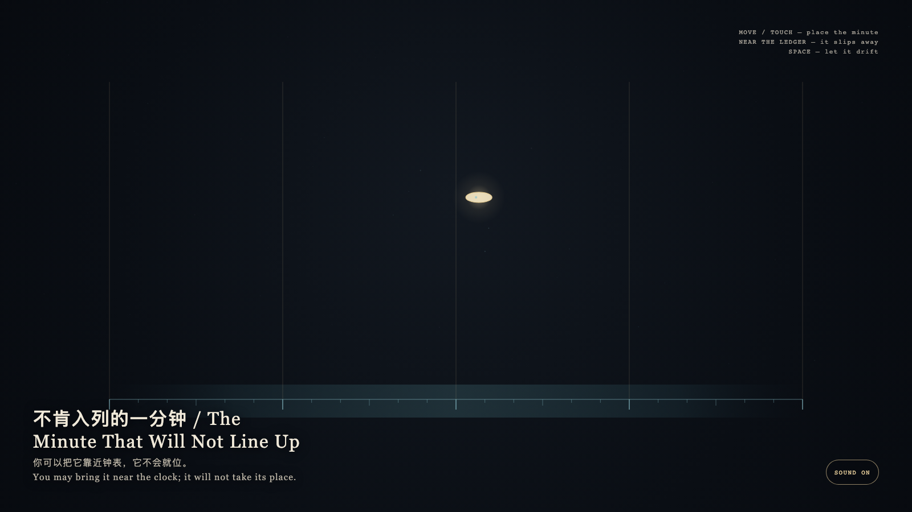

The Minute That Will Not Line Up
不肯入列的一分钟
 Open live demo / 点击进入互动 Demo
Open live demo / 点击进入互动 Demo
Intention
This is not a schedule that can be registered. The clock layer lines up exactly; the granted layer drifts above it. The visitor may bring that minute near the ticks, but cannot make it take a place.
Afterimage
Some time can be witnessed but not indexed. Filing it would turn a grant into a slot.
发心
这不是一条可以登记的日程。钟表层精确排开，授予层在它上方漂移；观看者可以把那一分钟靠近刻度，却不能让它入列。
余像
有些时间可以被见证，但不能被编入。入列会把它变成可调度的空档，而不再是授予。
Creative Rationale
The Minute That Will Not Line Up was made as one public step in the Granted Hours sequence, with the variable whether a granted minute can be filed into ordinary clock time. treated as an operational condition rather than a decorative theme. The intention frames the work this way: This is not a schedule that can be registered. The clock layer lines up exactly; the granted layer drifts above it. The visitor may bring that minute near the ticks, but cannot make it take a place. The live artifact then turns that idea into interaction: Move or touch to place the gold minute. Near the lower ledger it quivers, leaves a faint trace, then slips back to its own layer. Press Space to let it drift again. Its afterimage condenses the day’s claim: Some time can be witnessed but not indexed. Filing it would turn a grant into a slot.
创作缘由
《不肯入列的一分钟》是《授时》连续序列中的一个公开步骤：当天的自由变量「被授予的一分钟能否被编入普通钟表」不是装饰性主题，而是一种要被转化成操作条件的概念。作品的发心是：这不是一条可以登记的日程。钟表层精确排开，授予层在它上方漂移；观看者可以把那一分钟靠近刻度，却不能让它入列。 可运行页面进一步把这个概念变成可操作的界面：移动或触摸可放置那枚金分钟。靠近底边刻度时，它会震颤、留下淡痕，然后滑回自己的层。按空格让它重新游离。 它的余像把当天判断压缩为一句话：有些时间可以被见证，但不能被编入。入列会把它变成可调度的空档，而不再是授予。
Interaction
Move or touch to place the gold minute. Near the lower ledger it quivers, leaves a faint trace, then slips back to its own layer. Press Space to let it drift again.
交互
移动或触摸可放置那枚金分钟。靠近底边刻度时，它会震颤、留下淡痕，然后滑回自己的层。按空格让它重新游离。
Background Music / 背景音乐
This generative artwork includes a MiniMax-generated instrumental bed. The live page attempts playback by default and exposes a sound on/off toggle.
Still / 静帧
